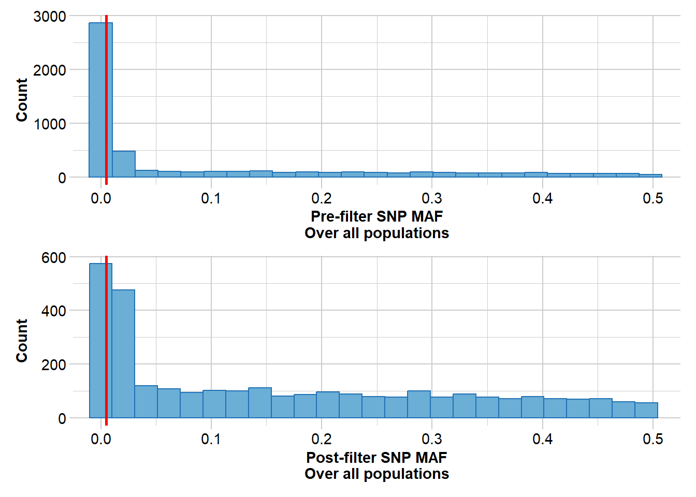
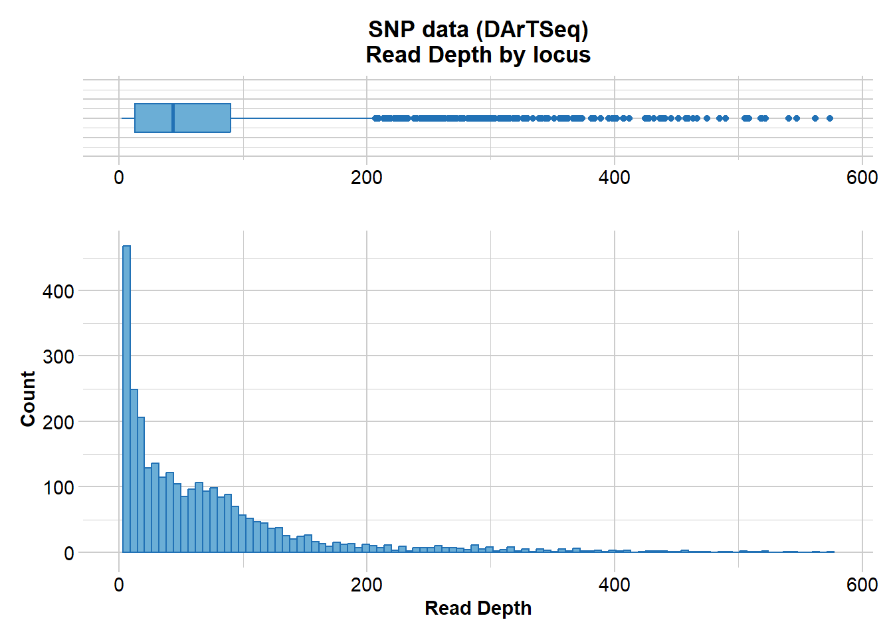
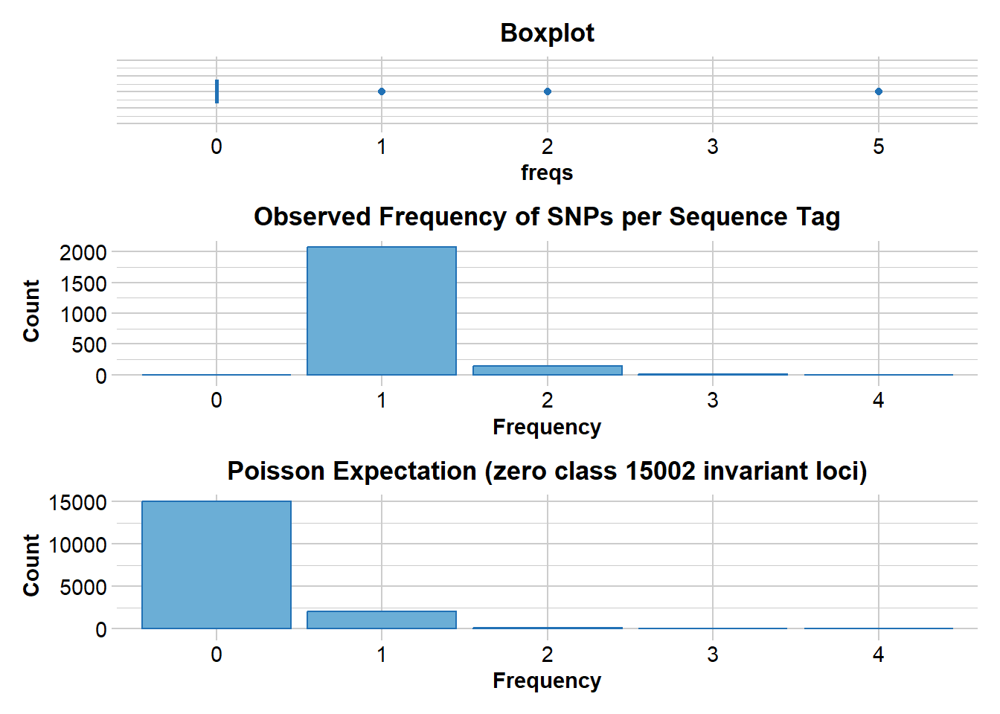
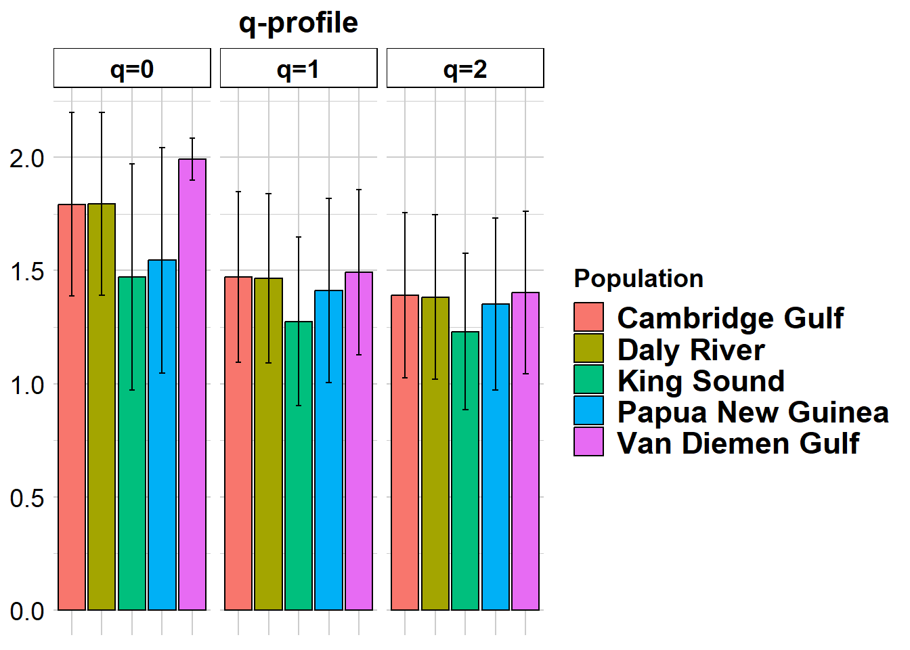
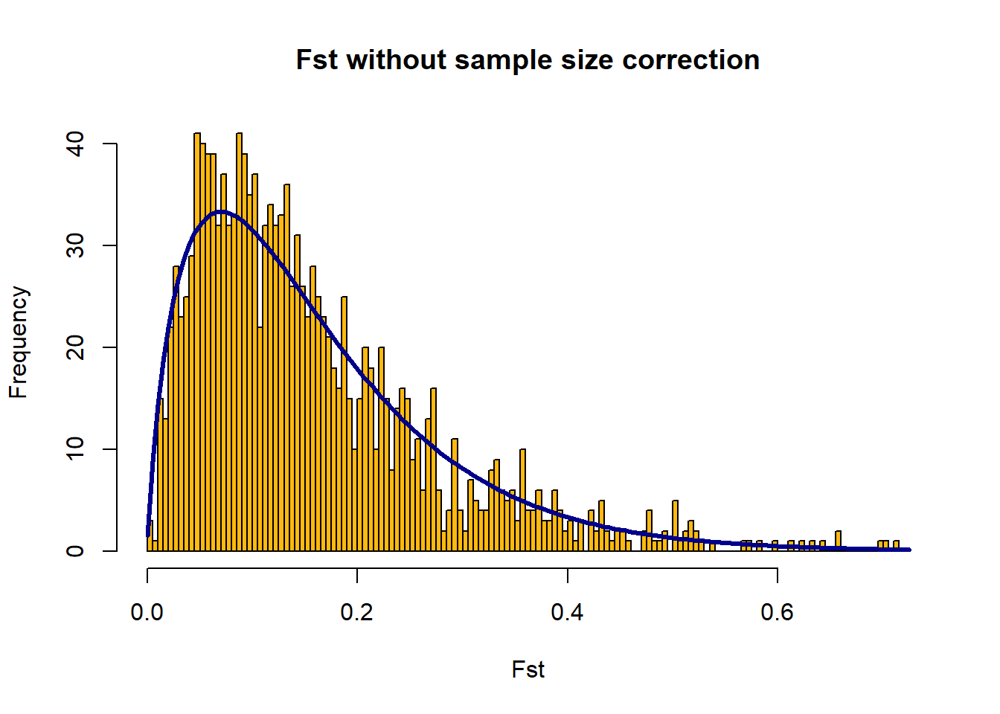

library(dartRverse)
library(adegenet)
library(diveRsity)
library(snpStats) #only for LD
library(ggtern) # for HWE diagnostics
library(related)Let’s get started
Load packages
These are the main packages we will be using today. Please check the Install packages tab for details.
Data introduction
We have made three dataset available for this tutorial. Pick one:
Bull shark DArTcap data
Northern River shark DArTcap data
Blue Shark DArTseq data
Bull shark
Data from Devloo-Delva, Burridge, et al. (2023).
data.file <- "data/Bull_shark_DArTcap_1rowGT.csv"
metadata.file <- "data/Bull_shark_DArTcap_metadata.csv"Northern River shark
Data from Feutry et al. (2020).
Around 470 G. garricki samples were collected from 11 different sampling locations in Northern Australia and Papua New Guinea.
data.file <- "data/Northern_river_shark_DArTcap_1rowGT.csv"
metadata.file <- "data/Northern_river_shark_DArTcap_metadata.csv"Blue shark
Data from Nikolic et al. (2023).

data.file <- "data/Blue_shark_DArTSeq_1rowGT_subset.csv"
metadata.file <- "data/Blue_shark_DArTseq_metadata.csv"Reading and filtering raw data
For the purpose of this workshop we will use the dartRverse packages to read and filter the data (Gruber et al. 2018; Mijangos et al. 2022).
Import data
data.gl <- dartR.base::gl.read.dart(filename = data.file,
ind.metafile = metadata.file,
verbose = 1)Starting ::
Starting dartR.base
Starting gl.read.dart
Starting utils.read.dart
Completed: utils.read.dart
Starting utils.dart2genlight
Ids for individual metadata does not match the number of ids in the SNP data file. Maybe this is fine if a subset matches.
ind.metafile ids not matched were:
[1] "GGA004" "GGA025" "GGA072" "GGA192" "GGA223" "GGA227" "GGA273"
[8] "GGA274" "GGA275" "GGA276" "GGA277" "GGA278" "GGA279" "GGA280"
[15] "GGA281" "GGA282" "GGA283" "GGA284" "GGA285" "GGA286" "GGA287"
[22] "GGA288" "GGA289" "GGA290" "GGA291" "GGA292" "GGA293" "GGA294"
[29] "GGA295" "GGA296" "GGA297" "GGA298" "GGA299" "GGA300" "GGA301"
[36] "GGA302" "GGA303" "GGA312" "GGA313" "GGA314" "GGA315" "GGA316"
[43] "GGA317" "GGA318" "GGA319" "GGA320" "GGA321" "GGA322" "GGA323"
[50] "GGA324" "GGA325" "GGA326" "GGL034" "GGL035" "GGL036" "GGL037"
[57] "GGL038" "GGL039" "GGL040" "GGL041" "GGL042" "GGL043" "GGL044"
[64] "GGL045" "GGL046" "GGL047" "GGL048" "GGL049" "GGSA012"
Completed: utils.dart2genlight
Starting gl.compliance.check
Processing genlight object with SNP data
Checking coding of SNPs
SNP data scored NA, 0, 1 or 2 confirmed
Checking for population assignments
Population assignments confirmed
Checking locus metrics and flags
Recalculating locus metrics
Checking for monomorphic loci
Dataset contains monomorphic loci
Checking for loci with all missing data
No loci with all missing data detected
Checking whether individual names are unique.
Checking for individual metrics
Individual metrics confirmed
Spelling of coordinates checked and changed if necessary to
lat/lon
Completed: gl.compliance.check
Completed: ::
Completed: dartR.base
Completed: gl.read.dart Save raw data
save(data.gl, file = "data/raw_genlight.Rdata")Quality filtering
The order of filtering can be important and requires some thought. The filtering steps may change depending on the analysis you intend to run. There is no one-fits-all approach to SNP filtering.
Warning
Be careful not to over-filter. The objective is to get an appropriate balance between signal to noise ratio, not to eliminate noise altogether at the expense of also taking out some signal. This balance will depend on downstream application.
A good strategy is to undertake an exploratory analysis first, whereby you experiment with filtering. Perhaps start with very stringent filtering, examine the impact on the final analysis, then progressively reduce the stringency to select the minimal filtering regime that still delivers a stable outcome. Play with your data to get a feel for the balance between signal to noise ratio, in the context of the analyses you propose to subsequently undertake.
Average reproducibility
DArT includes several technical replicates (~30 %) of your samples to see how reproducible the results are. Some SNPs are less reliable than others.
This metric is based on all individuals in your original dataset.
It is not advised to filter on reproducibility > 0.99, since you are like to remove more heterozygous SNPs (i.e. more difficult to genotype consistently).
dartR.base::gl.report.reproducibility(data.gl, verbose = 1)Starting ::
Starting dartR.base
Starting gl.report.reproducibility
Reporting Repeatability by Locus
No. of loci = 9111
No. of individuals = 467
Minimum : 0.788618
1st quartile : 0.996667
Median : 1
Mean : 0.9932215
3r quartile : 1
Maximum : 1
Missing Rate Overall: 0.07 Quantile Threshold Retained Percent Filtered Percent
1 100% 1.000000 5944 65.2 3167 34.8
2 95% 1.000000 5944 65.2 3167 34.8
3 90% 1.000000 5944 65.2 3167 34.8
4 85% 1.000000 5944 65.2 3167 34.8
5 80% 1.000000 5944 65.2 3167 34.8
6 75% 1.000000 5944 65.2 3167 34.8
7 70% 1.000000 5944 65.2 3167 34.8
8 65% 1.000000 5944 65.2 3167 34.8
9 60% 1.000000 5944 65.2 3167 34.8
10 55% 1.000000 5944 65.2 3167 34.8
11 50% 1.000000 5944 65.2 3167 34.8
12 45% 1.000000 5944 65.2 3167 34.8
13 40% 1.000000 5944 65.2 3167 34.8
14 35% 1.000000 5944 65.2 3167 34.8
15 30% 0.996753 6579 72.2 2532 27.8
16 25% 0.996667 6846 75.1 2265 24.9
17 20% 0.993506 7492 82.2 1619 17.8
18 15% 0.990909 7746 85.0 1365 15.0
19 10% 0.984127 8200 90.0 911 10.0
20 5% 0.957792 8667 95.1 444 4.9
21 0% 0.788618 9111 100.0 0 0.0
Completed: ::
Completed: dartR.base
Completed: gl.report.reproducibility data.gl <- dartR.base::gl.filter.reproducibility(data.gl, threshold = 0.98,
plot.colors = c("#2171B5", "#6BAED6"),
verbose = 1)Starting ::
Starting dartR.base
Starting gl.filter.reproducibility Completed: ::
Completed: dartR.base
Completed: gl.filter.reproducibility Invariable sites
You want to remove SNP that are not informative for population-level analyses. This will improve computation time and reduce the noise in the data.
All NA
Removes SNPs that have missing data for all samples.
data.gl <- dartR.base::gl.filter.allna(data.gl, verbose = 1)Starting ::
Starting dartR.base
Starting gl.filter.allna
Completed: ::
Completed: dartR.base
Completed: gl.filter.allna Monomorphic
Looks for loci which are all 0 (or 1 or 2) over the all samples. These are not informative.
dartR.base::gl.report.monomorphs(data.gl, verbose = 1)Starting ::
Starting dartR.base
Starting gl.report.monomorphs
No. of loci: 8364
Polymorphic loci: 5318
Monomorphic loci: 3046
Loci scored all NA: 1
No. of individuals: 467
No. of populations: 5
Completed: ::
Completed: dartR.base
Completed: gl.report.monomorphs data.gl <- dartR.base::gl.filter.monomorphs(data.gl, verbose = 5)Starting ::
[dartR.base vers. 0.88 Build = v.2023.2 ]
Starting dartR.base
[dartR.base vers. 0.88 Build = v.2023.2 ]
Starting gl.filter.monomorphs
[dartR.base vers. 0.88 Build = v.2023.2 ]
Processing genlight object with SNP data
Identifying monomorphic loci
Removing monomorphic loci and loci with all missing
data
Original No. of loci: 8364
Monomorphic loci: 3046
Loci scored all NA: 1
No. of loci deleted: 3046
No. of loci retained: 5318
No. of individuals: 467
No. of populations: 5
Completed: ::
Completed: dartR.base
Completed: gl.filter.monomorphs Minor Allele Frequency
Some mutations only occur in a couple of individuals, these are not informative for population-level analyses. Loci with a low Minor Allele Frequency (MAF) might not be informative enough and just increase computation time.
Warning
The threshold should be lower than the proportion of your smallest sampling location. For example, if one of your sample sites has 5 samples out of a total of 100 samples, the MAF should not be < 0.05. Else, your risk loosing the informative markers that differntiate that population.
dartR.base::gl.report.maf(data.gl, verbose = 1)Starting ::
Starting dartR.base
Starting gl.report.maf
Starting ::
Starting dartR.base
Starting gl.report.maf
Reporting Minor Allele Frequency (MAF) by Locus for population Cambridge Gulf
No. of loci = 2510
No. of individuals = 30
Minimum : 0.0167
1st quantile : 0.0345
Median : 0.1667
Mean : 0.1925474
3r quantile : 0.3167
Maximum : 0.5
Missing Rate Overall: 0.03
Reporting Minor Allele Frequency (MAF) by Locus for population Daly River
No. of loci = 2542
No. of individuals = 30
Minimum : 0.0167
1st quantile : 0.0345
Median : 0.1511
Mean : 0.1870297
3r quantile : 0.3167
Maximum : 0.5
Missing Rate Overall: 0.04
Reporting Minor Allele Frequency (MAF) by Locus for population King Sound
No. of loci = 1516
No. of individuals = 19
Minimum : 0.0263
1st quantile : 0.0278
Median : 0.1316
Mean : 0.1872923
3r quantile : 0.3158
Maximum : 0.5
Missing Rate Overall: 0.03
Reporting Minor Allele Frequency (MAF) by Locus for population Papua New Guinea
No. of loci = 1642
No. of individuals = 4
Minimum : 0.125
1st quantile : 0.125
Median : 0.25
Mean : 0.2812373
3r quantile : 0.375
Maximum : 0.5
Missing Rate Overall: 0.02
Reporting Minor Allele Frequency (MAF) by Locus for population Van Diemen Gulf
No. of loci = 4965
No. of individuals = 384
Minimum : 0.0013
1st quantile : 0.0026
Median : 0.0084
Mean : 0.09757069
3r quantile : 0.1706
Maximum : 0.5
Missing Rate Overall: 0.05
Reporting Minor Allele Frequency (MAF) by Locus OVERALL
No. of loci = 5318
No. of individuals = 467
Minimum : 0.0011
1st quantile : 0.0022
Median : 0.00755
Mean : 0.09431826
3r quantile : 0.15755
Maximum : 0.4989
Missing Rate Overall: 0.06 Quantile Threshold Retained Percent Filtered Percent
1 100% 0.4989 2 0.0 5316 100.0
2 95% 0.4197 267 5.0 5051 95.0
3 90% 0.3462 532 10.0 4786 90.0
4 85% 0.2842 799 15.0 4519 85.0
5 80% 0.2192 1064 20.0 4254 80.0
6 75% 0.1576 1330 25.0 3988 75.0
7 70% 0.1039 1597 30.0 3721 70.0
8 65% 0.0511 1862 35.0 3456 65.0
9 60% 0.0184 2131 40.1 3187 59.9
10 55% 0.0109 2397 45.1 2921 54.9
11 50% 0.0075 2678 50.4 2640 49.6
12 45% 0.0054 2954 55.5 2364 44.5
13 40% 0.0043 3222 60.6 2096 39.4
14 35% 0.0033 3487 65.6 1831 34.4
15 30% 0.0026 3731 70.2 1587 29.8
16 25% 0.0022 4118 77.4 1200 22.6
17 20% 0.0021 4257 80.0 1061 20.0
18 15% 0.0012 4555 85.7 763 14.3
19 10% 0.0011 5030 94.6 288 5.4
20 5% 0.0011 5318 100.0 0 0.0
21 0% 0.0011 5318 100.0 0 0.0
Completed: ::
Completed: dartR.base
Completed: gl.report.maf data.gl <- dartR.base::gl.filter.maf(data.gl, threshold = 0.005,
plot.colors = c("#2171B5", "#6BAED6"),
verbose = 1)Starting ::
Starting dartR.base
Starting gl.filter.maf 
Completed: ::
Completed: dartR.base
Completed: gl.filter.maf Read depth
Read depth has a considerable influence on the veracity of SNP calls. The low values arise because of chance variation in the coverage of particular bases. The high values arise because of the differential efficiency of the PCR steps or paralogous fragments. Under some circumstances, it might be sensible to push the lower threshold for read depth higher than has been used by the Diversity Arrays Technology in their report. Analyses that rely heavily on the accuracy of calls of heterozygotes may require a higher threshold for read depth, say 10x, for example.
Check the histogram to see how many SNP have low or high counts. Low counts might not be reliably genotyped. High counts may be due to paralogous fragments.
dartR.base::gl.report.rdepth(data.gl, verbose = 1)Starting ::
Starting dartR.base
Starting gl.report.rdepth
Reporting Read Depth by Locus
No. of loci = 3027
No. of individuals = 467
Minimum : 2
1st quartile : 12.8
Median : 43.2
Mean : 68.76938
3r quartile : 89.9
Maximum : 573.8
Missing Rate Overall: 0.05 
Quantile Threshold Retained Percent Filtered Percent
1 100% 573.8 1 0.0 3026 100.0
2 95% 249.7 152 5.0 2875 95.0
3 90% 156.7 303 10.0 2724 90.0
4 85% 122.9 455 15.0 2572 85.0
5 80% 103.6 606 20.0 2421 80.0
6 75% 90.0 757 25.0 2270 75.0
7 70% 79.3 910 30.1 2117 69.9
8 65% 70.4 1061 35.1 1966 64.9
9 60% 61.6 1211 40.0 1816 60.0
10 55% 51.4 1363 45.0 1664 55.0
11 50% 43.2 1514 50.0 1513 50.0
12 45% 35.8 1666 55.0 1361 45.0
13 40% 28.6 1818 60.1 1209 39.9
14 35% 21.9 1969 65.0 1058 35.0
15 30% 17.1 2120 70.0 907 30.0
16 25% 12.8 2272 75.1 755 24.9
17 20% 9.4 2422 80.0 605 20.0
18 15% 6.9 2576 85.1 451 14.9
19 10% 5.0 2728 90.1 299 9.9
20 5% 3.3 2879 95.1 148 4.9
21 0% 2.0 3027 100.0 0 0.0
Completed: ::
Completed: dartR.base
Completed: gl.report.rdepth data.gl <- dartR.base::gl.filter.rdepth(data.gl, lower = 5, upper = 200, verbose = 1)Starting ::
Starting dartR.base
Starting gl.filter.rdepth Completed: ::
Completed: dartR.base
Completed: gl.filter.rdepth Missing data for SNPs
Call rate is defined as 1 - proportion of missing data. SNPs with too much missing data are not reliable and informative.
Call Rate for SNPs can arise from two sources. The first source is where a missing value arises because the sequence tag bearing the target SNP cannot be amplified – there has been a mutation at one or both of the restriction sites. The second source of missing values is where the read depth is insufficient to make a reliable call on the SNP. Either way, the SNP is not called and is recorded as NA. A first step in filtering on Call Rate is to examine the distribution of Call Rates across loci. We use the function gl.report.callrate to yield the following output and graph.
dartR.base::gl.report.callrate(data.gl, method = "loc", verbose = 1)Starting ::
Starting dartR.base
Starting gl.report.callrate
Reporting Call Rate by Locus
No. of loci = 2513
No. of individuals = 467
Minimum : 0.20985
1st quartile : 0.987152
Median : 0.993576
Mean : 0.9637389
3r quartile : 1
Maximum : 1
Missing Rate Overall: 0.0363 Completed: ::
Completed: dartR.base
Completed: gl.report.callrate data.gl <- dartR.base::gl.filter.callrate(data.gl, method = "loc", threshold = 0.8, verbose = 1)Starting ::
Starting dartR.base
Starting gl.filter.callrate Completed: ::
Completed: dartR.base
Completed: gl.filter.callrate Missing data for individuals
Call rate is defined as 1 - proportion of missing data. Samples with degraded DNA will have a lot of missing sequencing data. These samples are unreliably sequenced and should be removed.
dartR.base::gl.report.callrate(data.gl, method = "ind", verbose = 1)Starting ::
Starting dartR.base
Starting gl.report.callrate
Reporting Call Rate by Individual
No. of loci = 2373
No. of individuals = 467
Minimum : 0.4551201
1st quartile : 0.9903076
Median : 0.9928361
Mean : 0.9871529
3r quartile : 0.9945217
Maximum : 0.997893
Missing Rate Overall: 0.0128
Listing 5 populations and their average CallRates
Monitor again after filtering
Population CallRate N
1 Cambridge Gulf 0.9898 30
2 Daly River 0.9829 30
3 King Sound 0.9830 19
4 Papua New Guinea 0.9854 4
5 Van Diemen Gulf 0.9875 384
Listing 20 individuals with the lowest CallRates
Use this list to see which individuals will be lost on filtering by individual
Set ind.to.list parameter to see more individuals
Individual CallRate
1 GGL032 0.4551201
2 GGSA011 0.4938896
3 GGSA016 0.6392752
4 GGA051 0.6814159
5 GGA053 0.7568479
6 GGD029 0.7926675
7 GGA252 0.9447956
8 GGA241 0.9481669
9 GGA188 0.9603877
10 GGK013 0.9713443
11 GGA176 0.9717657
12 GGL001 0.9721871
13 GGS029 0.9759798
14 GGKS002 0.9768226
15 GGA350 0.9785082
16 GGD011 0.9793510
17 GGK008 0.9797724
18 GGKS005 0.9801938
19 GG19 0.9806153
20 GGK006 0.9814581
)Completed: ::
Completed: dartR.base
Completed: gl.report.callrate data.gl <- dartR.base::gl.filter.callrate(data.gl, method = "ind", threshold = 0.8, verbose = 1)Starting ::
Starting dartR.base
Starting gl.filter.callrate Completed: ::
Completed: dartR.base
Completed: gl.filter.callrate Individual heterozygosity
Delete individuals with a heterozygosity below or above the threshold. High heterozygosity could be due to DNA cross-contamination from other individuals. Low heterozygosity could be due to population structure, inbreeding or excess missing values (normally the latter should be filtered out already).
dartR.base::gl.report.heterozygosity(data.gl, method = "ind", verbose = 1)Starting ::
Starting dartR.base
Starting gl.report.heterozygosity
Starting gl.colors
Selected color type 2
Completed: gl.colors Completed: ::
Completed: dartR.base
Completed: gl.report.heterozygosity data.gl <- dartR.base::gl.filter.heterozygosity(data.gl, t.lower = 0, t.upper = 0.3, verbose = 1)Starting ::
Starting dartR.base
Starting gl.filter.heterozygosity
Completed: ::
Completed: dartR.base
Completed: gl.filter.heterozygosity Invariable sites
When filtering has resulted in removal of some individuals or populations, variation at several loci may be lost. Some loci may even be scored as missing across all individuals. You may wish to remove these monomorphic loci from your dataset.
data.gl <- dartR.base::gl.filter.allna(data.gl, verbose = 1)Starting ::
Starting dartR.base
Starting gl.filter.allna
Completed: ::
Completed: dartR.base
Completed: gl.filter.allna dartR.base::gl.report.monomorphs(data.gl, verbose = 1)Starting ::
Starting dartR.base
Starting gl.report.monomorphs
No. of loci: 2373
Polymorphic loci: 2373
Monomorphic loci: 0
Loci scored all NA: 1
No. of individuals: 460
No. of populations: 5
Completed: ::
Completed: dartR.base
Completed: gl.report.monomorphs data.gl <- dartR.base::gl.filter.monomorphs(data.gl, verbose = 1)Starting ::
Starting dartR.base
Starting gl.filter.monomorphs
Completed: ::
Completed: dartR.base
Completed: gl.filter.monomorphs Linked loci
SNPs that are close together will be inherited together. Consequently, linked SNPs are not independent and will bias the data by inflating the signal.
Tip
Do not filter on LD, if you aim to analyse you data of effective population size based on linkage disequilibrium.
Short-distance linkage
Sequence tags can contain more than one callable SNP marker. Because of their close proximity, these multiple SNPs within a single sequence tag (referred to in dartR as ‘secondaries’ are likely to be strongly linked (inherited together). This is problematic for many analyses, so one might wish to filter out the multiple SNPs to leave only one per sequence tag.
This function removes SNPs on the same 70 bp sequence tag, it retains the SNP with the highest RepAvg (average reproducibility) andrAvgPIC (average polymorphic information content), respectively.
dartR.base::gl.report.secondaries(data.gl, verbose = 1)Starting ::
Starting dartR.base
Starting gl.report.secondaries 
Total number of SNP loci scored: 2373
Number of sequence tags in total: 2216
Estimated number of invariant sequence tags: 15002
Number of sequence tags with secondaries: 145
Number of secondary SNP loci that would be removed on
filtering: 157
Number of SNP loci that would be retained on filtering: 2216
Number of invariant sites in sequenced tags: 134077
Mean length of sequence tags: 61.57491
Total Number of invariant sites (including invariant sequence
tags): 1057824
Completed: ::
Completed: dartR.base
Completed: gl.report.secondaries Param Value
1 n.total.tags 2.216000e+03
2 n.SNPs.secondaries 1.570000e+02
3 n.invariant.tags 1.500200e+04
4 n.tags.secondaries 1.450000e+02
5 n.inv.gen 1.340770e+05
6 mean.len.tag 6.157491e+01
7 n.invariant 1.057824e+06
8 Lambda 1.377714e-01data.gl <- dartR.base::gl.filter.secondaries(data.gl, method = "best", verbose = 1)Starting ::
Starting dartR.base
Starting gl.filter.secondaries
Completed: ::
Completed: dartR.base
Completed: gl.filter.secondaries Long-distance linkage
Not running this because it takes too long, but consider using this if you have many SNPs and a small genome.
ld.report <- dartR.base::gl.report.ld.map(data.gl, ld.stat = "R.squared", verbose = 1)
# changes between ''.' and '_' depending on your version of snpStats
ld.report$ld_stat <- ld.report$ld.stat
ld.report$locus_a.stat_keep <- ld.report$locus_a.stat.keep
ld.report$locus_b.stat_keep <- ld.report$locus_b.stat.keepdartR.base::gl.report.ld(data.gl, verbose = 1)data.gl <- dartR.base::gl.filter.ld(data.gl, ld.report, threshold = 0.25, verbose = 1)Hardy-Weinberg Equilibrium
The Hardy–Weinberg equilibrium (HWE) states that allele and genotype frequencies in a population will remain constant from generation to generation in the absence of other evolutionary influences. SNPs that are sampled from a population in demographic equilibrium are expected to follow this equation: \(p^2 + 2pq + q^2 = 1\), where \(p\) is the frequency of the major allele (A) and \(q\) is frequency of the minor allele (a).
In the simplest case of a single locus with two alleles denoted A and a with frequencies \(f(A) = p\) and \(f(a) = q\), respectively, the expected genotype frequencies under random mating are \(f(AA) = p^2\) for the AA homozygotes, \(f(aa) = q^2\) for the aa homozygotes, and \(f(Aa) = 2pq\) for the heterozygotes.
Warning
There are several factors that can cause deviations from Hardy-Weinberg proportions including:
- Mutations
- Finite population size
- Selection
- Population structure
- Age structure
- Assortative mating
- Sex linkage
- Non-random sampling
- Genotyping errors
Therefore, testing for Hardy-Weinberg proportions should be a process that involves a careful evaluation of the results, a good place to start is Waples (2015). Note that tests for H-W proportions are only valid if there is no population substructure (assuming random mating) and have sufficient power only when there is sufficient sample size (n individuals > 15).
dartR.base::gl.diagnostics.hwe(data.gl, verbose = 1)Starting ::
Starting dartR.base
Starting gl.diagnostics.hwe
Starting gl.colors
Selected color type 2c
Completed: gl.colors `geom_line()`: Each group consists of only one observation.
ℹ Do you need to adjust the group aesthetic?
Starting gl.colors
Selected color type 2
Completed: gl.colors
Starting gl.colors
Selected color type 2c
Completed: gl.colors
Starting utils.jackknife
Processing genlight object with SNP data
The variation of Fis and Fst, respectively
(measured as
standard error with the Jackknife method - see De Meeus 2018)
is: 2.10540973158501e-06, 1.65673151873847e-06
Fis vs Fst
ratio is: 1.27 `geom_smooth()` using formula = 'y ~ x'Warning: Removed 7 rows containing non-finite values (`stat_smooth()`).Warning: Removed 7 rows containing missing values (`geom_point()`). Population nSig nExpected Deficiency Excess PropDeficiency ChiSquare
Cambridge Gulf 55 110.8 40 15 0.7272727 2184.287
Daly River 78 110.8 52 26 0.6666667 2233.706
King Sound 42 110.8 14 28 0.3333333 1245.482
Van Diemen Gulf 207 110.8 140 67 0.6763285 7903.792
pvalue
1.000000e+00
1.000000e+00
1.000000e+00
7.619698e-200
Completed: ::
Completed: dartR.base
Completed: gl.diagnostics.hwe dartR.base::gl.report.hwe(data.gl, verbose = 1)Starting ::
Starting dartR.base
Starting gl.report.hwe
Starting gl.colors
Selected color type 2c
Completed: gl.colors `geom_line()`: Each group consists of only one observation.
ℹ Do you need to adjust the group aesthetic?
Reporting significant departures from Hardy-Weinberg
Equilibrium
NB: Departures significant at the alpha level of 0.05 are listed
Adjustment of p-values for multiple comparisons vary
with sample size
Population Locus Hom_1 Het Hom_2 N Prob Sig
Van Diemen Gulf 100001551-62-C/T 153 153 72 378 3.550897e-03 sig
Daly River 100001738-59-T/C 22 3 2 27 3.726019e-02 sig
Daly River 100001760-48-G/A 23 3 2 28 3.460801e-02 sig
Cambridge Gulf 100001906-15-C/T 22 5 3 30 3.228943e-02 sig
Van Diemen Gulf 100002098-21-C/T 115 206 58 379 3.544120e-02 sig
---
Van Diemen Gulf 8171499-22-A/G 3 212 162 377 1.542178e-15 sig
Cambridge Gulf 8171660-43-C/T 0 22 8 30 1.832795e-03 sig
Daly River 8171660-43-C/T 0 24 4 28 8.156677e-05 sig
King Sound 8171660-43-C/T 1 18 0 19 1.510845e-04 sig
Van Diemen Gulf 8171660-43-C/T 8 267 103 378 4.829275e-26 sig
Prob.adj Sig.adj npop
NA NA 1
NA NA 1
NA NA 1
NA NA 1
NA NA 1
---
NA NA 2
NA NA 4
NA NA 4
NA NA 4
NA NA 4
Completed: ::
Completed: dartR.base
Completed: gl.report.hwe data.gl <- dartR.base::gl.filter.hwe(data.gl, n.pop.threshold = 3,
mult.comp.adj = TRUE,
mult.comp.adj.method = "BH",
verbose = 1)Starting ::
Starting dartR.base
Starting gl.filter.hwe
Completed: ::
Completed: dartR.base
Completed: gl.filter.hwe Remove duplicate individuals
Since DArT includes technical replicates and you could potentially recapture individuals, it important to remove replicate individuals. Duplicates individuals will inflate the signal you are investigating.
res_dup <- dartR.base::gl.report.replicates(data.gl,loc_threshold = 500, perc_geno = 0.85)Starting ::
Starting dartR.base
Starting gl.report.replicates
Processing genlight object with SNP dataCompleted: ::
Completed: dartR.base
Completed: gl.report.replicates Filtering Conclusion
Influence of Planned Analyses
Possibly the most influential consideration on filtering is the purpose for which the filtered data set is to be used.
If you are planning to generate high resolution linkage maps, then highly stringent filtering is warranted, and Diversity Arrays Technology would adjust their pipelines accordingly upon request. Similarly, if you are contemplating an analysis of relatedness or inbreeding, then stringent filtering might be warranted. In any case, it would be wise to start out with high stringency and then progressively relax the stringency and examine the impact on outcomes.
If your focus is on identifying sex-linked markers, which rely heavily on identifying markers that are heterozygous in XY individuals and homozygous in XX individuals, then a filtering threshold for read depth of 10x would be sensible. Sequencing volume in the context of genome size will provide an upper limit to how far you can push the read depth threshold, so in some cases, a high sequence volume service will need to be requested. Because the pipelines of Diversity Arrays Technology depend in part on Mendelian behaviour in the selection of SNP markers, and sex-linked loci do not behave in Mendelian fashion, you might also ask them to relax the stringency of some aspects of their filtering in generating the report.
If your focus is on Genome-wide Association Studies (GWAS) or identifying loci under selection, then noise in the data will not associate with phenotype, and so filtering can be less stringent in order to maximize the chances of identifying promising associations.
Principal Coordinates Analysis PCA (and to a lesser extent, Principal Components Analysis, PCoA), rely on fully populated data matrices (no missing values). Classical PCA for example, cannot easily accommodate missing values. To overcome this, a balance must be struck between filtering on Call Rate and imputing the values of those missing values that remain. More stringent filtering on Call Rate, and less imputation; but more stringent filtering on Call Rate, more loss of potentially useful information or valuable samples. Refer to Georges et al. (2023) for further discussion of this point.
Tip
There is no hard and fast rule to guide decisions on filtering SNP datasets prior to a substantive analysis. The decisions are based on comparing the distribution of the parameters to be filtered (using one of the gl.report functions) and the purpose to which the filtered dataset is to be put. Sequencing volume can constrain options, and the likelihood of some level of contamination of samples or presence of inhibitors of the restriction enzymes can have a bearing on the decisions. It is important not to over filter because of the risk of introducing a level of systematic bias and because of the unnecessary loss of informative loci or individuals. An experimental approach is recommended, whereby different filtering regimes are tried (from stringent to less stringent) and checked for influence on analysis outcomes.
Population structure
Inferring ancestry differences among individuals from different populations, or identifying population structure has been motivated by many applications:
Population genetics
Genetic association studies
Prediction of whether an individual will have particular traits (for instance in people that have the duffy antigen that allows them to have resistance to malaria)
Until recently we were only able to group individuals into populations using a few genetic markers. However, the decrease in cost and improvements in technology mean that is now feasible to use whole genomes to perform these kinds of analyses. This means that we can now have very fine scaled analyses of populations based on many thousands of markers.
Examining population structure can give us a great deal of insight into the history and origin of populations. Model-free methods for examining population structure and ancestry, such as principal components analysis are extremely popular in population genomic research. This is because it is typically simple to apply and relatively easy to interpret.
Principal Component Analysis
Principal components analysis (PCA) is the most commonly recognised and used method for identifying population structure. Essentially, PCA aims to identify the main axes of variation in a dataset with each axis being independent of the next (i.e. there should be no correlation between them). The first component summarizes the major axis variation and the second the next largest and so on, until cumulatively all the available variation is explained. In the context of genetic data, PCA summarizes the major axes of variation in allele frequencies and then produces the coordinates of individuals along these axes. For the rest of the tutorial we will conduct a PCA to demonstrate how it can help give insight to population structure within species.
This analysis allows us to calculate principal components (PCs) that explain the differences between individuals in genetic data. The naming of each of these components is based on the percentage of variation in the data they explain, with principal component 1 (PC1) being the most explanatory PC of the data. For instance if PC1 explains 5.7%. PC2 will have the next largest contribution to the genetic variance, for example PC2 may contribute 3.4%. The overall variance should add up to 100%.
PCA <- dartR.base::gl.pcoa(data.gl, nfactors = 5, verbose = 0)Starting gl.colors
Selected color type 2
Completed: gl.colors dartR.base::gl.pcoa.plot(PCA, data.gl, xaxis = 1, yaxis = 2, verbose = 0)
dartR.base::gl.pcoa.plot(PCA, data.gl, xaxis = 2, yaxis = 3, verbose = 0)
Exercise

How many genetic clusters are present across the sequenced samples? A cluster can be defined as a group of individuals that are genetically very similar to each other. Each cluster is genetically distinct from other clusters.
What is the relationship among these genetic clusters? i.e. which cluster is the most genetically distinct? Which genetic clusters are most similar to one another?
How many PCs is it worth plotting?
Can you identify the cluster membership of each individual? There are a variety of ways to do this. For example, you can look at the
PCA$scoresand sort the columns by PC.
Fixation indices
\(FST\), also known as the fixation index, is an extremely important statistic in population genetics, molecular ecology and evolutionary biology. It is also arguably one of the most famous population genetic statistics you will encounter. \(FST\) essentially measures the level of genetic differentiation between two or more populations. It ranges from 0 (i.e. no genetic differentiation) to 1 (complete genetic differentiation)
Ultimately, it is quite a simple statistic to understand but it can sometimes take time to properly grasp. So we will go over the basics properly here. One of the most confusing things about \(FST\) is that are several different ways to define it. For ease of understanding, we will use a simple formulation:
\(FST=(HT−HS)/HT\)
For simplicity, imagine we are examining two populations only. With this formulate, \(HT\) is the expected heterozygosity when the two populations are considered as one large meta-population. \(HS\) is the average expected heterozygosity in the two populations.
You might be thinking, hang on a minute… what do we mean by expected heterozygosity? To appreciate this, we need to think back to the Hardy-Weinberg expectation we learned about in Section 4.3.9. Remember that at a simple bi-allelic locus, \(p\) and \(q\) are the frequencies of the two alleles. We can calculate the expected frequency of heterozygotes with \(2pq\) - this is the expected heterozygosity.
You can use \(FST\) to identify the relationship between individuals, and it can be used to identify populations. To do this, you first need to define the members of each of your populations. You did this at the end of the PCA section where you identified cluster membership.
fst.res <- dartR.base::gl.fst.pop(data.gl, nboots = 100, verbose = 0)
fst.res$Fsts Cambridge Gulf King Sound Daly River Van Diemen Gulf
Cambridge Gulf NA NA NA NA
King Sound 0.28898221 NA NA NA
Daly River 0.09406955 0.3033545 NA NA
Van Diemen Gulf 0.11954153 0.2523445 0.0865569 NA
Papua New Guinea 0.15241388 0.3989535 0.1833683 0.1691328
Papua New Guinea
Cambridge Gulf NA
King Sound NA
Daly River NA
Van Diemen Gulf NA
Papua New Guinea NAfst.res$Pvalues Cambridge Gulf King Sound Daly River Van Diemen Gulf
Cambridge Gulf NA NA NA NA
King Sound 0 NA NA NA
Daly River 0 0 NA NA
Van Diemen Gulf 0 0 0 NA
Papua New Guinea 0 0 0 0
Papua New Guinea
Cambridge Gulf NA
King Sound NA
Daly River NA
Van Diemen Gulf NA
Papua New Guinea NA## correction for multiple testing: Bonferroni, Benjamini-Hochberg
Fst.p.adj <- stats::p.adjust(fst.res$Pvalues, "BH")
Fst.p.adj <- matrix(Fst.p.adj, ncol = adegenet::nPop(data.gl))
colnames(Fst.p.adj) <- adegenet::popNames(data.gl)
rownames(Fst.p.adj) <- adegenet::popNames(data.gl)
Fst.p.adj Cambridge Gulf Daly River King Sound Papua New Guinea
Cambridge Gulf NA NA NA NA
Daly River 0 NA NA NA
King Sound 0 0 NA NA
Papua New Guinea 0 0 0 NA
Van Diemen Gulf 0 0 0 0
Van Diemen Gulf
Cambridge Gulf NA
Daly River NA
King Sound NA
Papua New Guinea NA
Van Diemen Gulf NAfixed.diff <- dartR.base::gl.fixed.diff(data.gl, tloc = 0.1, verbose = 0)
fixed.diff$fd Cambridge Gulf Daly River King Sound Papua New Guinea
Daly River 0
King Sound 9 15
Papua New Guinea 6 3 23
Van Diemen Gulf 0 0 5 4
Exercise

Do the \(FST\) metrics support the PCA results?
Do you see a different significance in p-values when correcting for multiple comparisons?
Genetic diversity
Genetic variability of populations of a species is important because it can be thought of an indirect measure of the evolvability of those populations. The greater the genetic diversity of a population the bigger the amount of genetic raw material upon which selection can act. A population deprived of its genetic variability is less likely to respond to environmental changes and more vulnerable to the negative effects of inbreeding. From a theoretical point of you measuring (correctly) genetic diversity of a population and comparing it among different naturally occurring or human driven treatments might be important to test the theoretical predictions on impact of drift on effect of population size of relatively isolated (small) populations and on mechanisms of genetic variance (diversity) maintenance. From the conservation point of view the relative genetic diversity of population differentially affected by human intervention might give insight into how resilient populations of a species are to rapid changes of the habitat in which they live.
Ho = Observed heterozygosity
\(Ho= 1-\sum_k \sum_i Pkii/np\)
where \(Pkii\) represents the proportion of homozygote \(i\) in sample \(k\) and \(np\) the number of samples.
Hs = Within population gene diversity (sometimes misleadingly called expected heterozygosity, He)
\(Hs=\tilde{n}/(\tilde{n}-1)[1-\sum_i\bar{p_i^2}-Ho/2\tilde{n}]\)
where \(\tilde{n}=np/\sum_k 1/n_k\) and \(\bar{p_i^2}=\sum_k p_{ki}^2/np\)
Ht = Overall gene diversity
\(Ht= 1-\sum_i\bar{p_i}^2+Hs/(\tilde{n} np)-Ho/(2\tilde{n}np)\)
where \(\bar{p_i}=\sum_kp_{ki}/np\).
Dst = Amount of gene diversity among samples
\(Dst=Ht-Hs\)
Htp = corrected Ht
\(Ht'=Hs+Dst'\)
Dstp = Corrected Dst
\(Dst'=np/(np-1)Dst\)
Fst = Fixation index
\(Fst=Dst/Ht\) (This is not the same as Nei’s \(Gst\))
Fstp = Corrected Fst
\(Fst'=Dst'/Ht'\)
Fis = Inbreeding coefficient
\(Fis=1-Ho/Hs\)
Dest = a measure of population differentiation as defined by Jost (2008)
\(Dest=np/(np-1) (Ht'-Hs)/(1-Hs)\)
where \(p_{ki}\) are unweighted by sample size.
Gst = an estimator of \(Fst\) based on allele frequencies only
basic.stats <- dartR.base::utils.basic.stats(data.gl)
basic.stats$overall Ho Hs Ht Dst Htp Dstp Fst Fstp Fis Dest
0.2176 0.2155 0.2610 0.0455 0.2724 0.0569 0.1743 0.2088 -0.0098 0.0725
Gst_max Gst_H
0.7506 0.2782 colMeans(basic.stats$Ho, na.rm = TRUE) #observed heterozygosity Cambridge Gulf Daly River King Sound Papua New Guinea
0.2333104 0.2293272 0.1446049 0.2412934
Van Diemen Gulf
0.2391721 hets <- gl.report.heterozygosity(data.gl, method = "pop")Starting gl.report.heterozygosity
Processing genlight object with SNP data
Calculating Observed Heterozygosities, averaged across
loci, for each population
Calculating Expected Heterozygosities
Starting gl.colors
Selected color type dis
Completed: gl.colors pop n.Ind n.Loc n.Loc.adj polyLoc monoLoc
Cambridge Gulf Cambridge Gulf 29.785262 2212 1 1752 460
Daly River Daly River 27.773056 2212 1 1757 455
King Sound King Sound 18.815956 2206 1 1048 1158
Papua New Guinea Papua New Guinea 3.956581 2211 1 1205 1006
Van Diemen Gulf Van Diemen Gulf 376.841772 2212 1 2193 19
all_NALoc Ho HoSD HoSE He HeSD
Cambridge Gulf 0 0.233314 0.202012 0.004295 0.231541 0.190550
Daly River 0 0.229330 0.202057 0.004296 0.227633 0.189611
King Sound 6 0.144606 0.212348 NA 0.134674 0.185966
Papua New Guinea 1 0.241294 0.281102 NA 0.204037 0.203145
Van Diemen Gulf 0 0.239172 0.188658 0.004011 0.240018 0.186304
HeSE uHe uHeSD uHeSE FIS FISSD FISSE
Cambridge Gulf 0.004052 0.235494 0.193803 0.004121 0.010577 0.185612 NA
Daly River 0.004032 0.231807 0.193087 0.004105 0.009830 0.194138 NA
King Sound NA 0.138351 0.191042 NA -0.029191 0.220399 NA
Papua New Guinea NA 0.233551 0.232530 NA -0.026071 0.373230 NA
Van Diemen Gulf 0.003961 0.240337 0.186551 0.003966 0.010817 0.106491 NA
Completed: gl.report.heterozygosity Some alternate measures for genetic diversity are more comparable between datasets.This is provided by the gl.report.diversity function.
The output of this function: provide information for different indices: allelic richness (q = 0), Shannon information (q = 1), and heterozygosity (q = 2); within (alpha) or between (beta) populations. For all indexes, the entropies (H) and Hill numbers (D) are calculated.
In a nutshell, the alpha indexes between the different q-values should be similar if there is no deviation from expected allele frequencies and occurrences (e.g. all loci in HWE & equilibrium). If there is a deviation of an index, this links to a process causing it, such as dispersal, selection or strong drift. For a detailed explanation of all the indexes see Sherwin et al. (2017).
divers <- dartR.base::gl.report.diversity(data.gl, table = FALSE, pbar = FALSE, verbose = 0) Processing genlight object with SNP data
divers$one_H_alpha Cambridge Gulf Daly River King Sound Papua New Guinea
0.3529367 0.3482662 0.2051896 0.3026173
Van Diemen Gulf
0.3687394 divers$one_H_beta Cambridge Gulf Daly River King Sound Papua New Guinea
Cambridge Gulf NA 0.14604195 0.20724507 0.20825765
Daly River 0.03065942 NA 0.19289681 0.19368266
King Sound 0.10234696 0.10471342 NA 0.27058669
Papua New Guinea 0.05352050 0.05579714 0.12753651 NA
Van Diemen Gulf 0.02042284 0.02275808 0.09423184 0.04555016
Van Diemen Gulf
Cambridge Gulf 0.08479532
Daly River 0.07111530
King Sound 0.16381330
Papua New Guinea 0.16576583
Van Diemen Gulf NA
Exercise

Can you compare observed versus expected heterozygosity per population? Why would they be different?
Which population has the lowest genetic diversity? What would this mean for the population?
Is inbreeding (FIS) prominent in any population? What could cause this?
Population connectivity
divMigrate uses the method described in Sundqvist et al. (2016) to plot the relative migration levels between population samples.
Nm (i.e., the effective number of migrants). This statistic incorporates complementary information from both Gst and D, suggesting it may be a more generally suitable measure of migration. When using Nm for calculating the percent of correct directions in the different simulation scenarios.
Alternatively, the number of private alleles provides an indication of genetic isolation. We use private alleles (i.e. alleles only present in one population) as a sign of no migration.
source("gl2gpop_FDD.R")
gl2gpop(data.gl, filename = "data/genepop.gen")
# dartR.base::gl2genepop(data.gl, outfile = "genepop.gen", outpath = getwd(), verbose = 5) # Not recognised by diveRsity
migration <- diveRsity::divMigrate(infile = "data/genepop.gen", boots = 100, stat = "Nm", plot_network = TRUE, para = TRUE, filter_threshold = 0.2)colnames(migration$nmRelMig) <- adegenet::popNames(data.gl)
rownames(migration$nmRelMig) <- adegenet::popNames(data.gl)
migration$nmRelMig Cambridge Gulf Daly River King Sound Papua New Guinea
Cambridge Gulf NA 0.7857795 0.10183280 0.2322329
Daly River 0.8169289 NA 0.09510506 0.1900063
King Sound 0.2703799 0.2472216 NA 0.1117764
Papua New Guinea 0.3508070 0.3018515 0.07791770 NA
Van Diemen Gulf 0.5989464 0.9129015 0.10757361 0.2043979
Van Diemen Gulf
Cambridge Gulf 0.6963752
Daly River 1.0000000
King Sound 0.3130946
Papua New Guinea 0.3640824
Van Diemen Gulf NA# Private alleles
dartR.base::gl.report.pa(data.gl, plot.display = TRUE, verbose = 0) Processing genlight object with SNP data p1 p2 pop1 pop2 N1 N2 fixed priv1 priv2 Chao1 Chao2
1 1 2 Cambridge Gulf Daly River 30 28 0 211 216 0 0
2 1 3 Cambridge Gulf King Sound 30 19 0 833 129 0 0
3 1 4 Cambridge Gulf Papua New Guinea 30 4 1 627 80 0 12
4 1 5 Cambridge Gulf Van Diemen Gulf 30 379 0 17 458 0 0
5 2 3 Daly River King Sound 28 19 0 843 134 0 0
6 2 4 Daly River Papua New Guinea 28 4 1 634 82 0 8
7 2 5 Daly River Van Diemen Gulf 28 379 0 10 446 0 0
8 3 4 King Sound Papua New Guinea 19 4 15 377 535 1 8
9 3 5 King Sound Van Diemen Gulf 19 379 1 5 1151 0 0
10 4 5 Papua New Guinea Van Diemen Gulf 4 379 0 7 995 0 0
totalpriv AFD asym asym.sig
1 427 0.115 NA NA
2 962 0.197 NA NA
3 707 0.166 NA NA
4 475 0.130 NA NA
5 977 0.200 NA NA
6 716 0.179 NA NA
7 456 0.109 NA NA
8 912 0.225 NA NA
9 1156 0.198 NA NA
10 1002 0.175 NA NA
Exercise

Which populations are highly connected?
How does this concur with knowledge on the dispersal ability and historical seascape of the species?
Does your connectivity changes if you use a different statistics (e.g. ‘D’ or ‘gst’)?
Natural selection in the context of adaptive divergence
Understanding natural selection is fundamental to properly understanding evolution. The basics of natural selection are relatively straightforward but surprisingly easily misunderstood. Our aim with this practical session is to use the R environment to actually demonstrate different methods to detect signals of selection.
Important
Both analyses to identify natural selection are much stronger if you have reference genome for your species, so you can pinpoint the genes and their functions that are being selected.
\(FST\)-based outliers
Good to detect strong selective pressure
This method looks for \(FST\) outliers from a list of \(FST\)’s for different loci. It assumes that each locus has been genotyped in all populations with approximately equal coverage. Here, we identify loci ‘putatively’ under selection per population using the outflank method of Whitlock and Lotterhos (2015).
OutFLANK estimates the distribution of \(FST\) based on a trimmed sample of \(FST\)’s. It assumes that the majority of loci in the center of the distribution are neutral and infers the shape of the distribution of neutral \(FST\) using a trimmed set of loci. Loci with the highest and lowest \(FST\)’s are trimmed from the data set before this inference, and the distribution of \(FST df/(mean FST)\) is assumed to follow a chi-square distribution. Based on this inferred distribution, each locus is given a q-value based on its quantile in the inferred null distribution.
More information here:
Detection of the signal of selection from genome scan
outliers <- dartR.popgen::gl.outflank(data.gl,
plot = TRUE,
LeftTrimFraction = 0.05,
RightTrimFraction = 0.05,
Hmin = 0.1,
qthreshold = 0.05,)Starting gl2gi
Processing genlight object with SNP data
Matrix converted.. Prepare genind object...
Completed: gl2gi
Calculating FSTs, may take a few minutes...
outliers$outflank$numberLowFstOutliers[1] 0outliers$outflank$numberHighFstOutliers[1] 0Genotype-Environment associations
Better at detecting weak selective pressures
Here, we illustrate the use of Redundancy Analysis (RDA) as a genotype-environment association (GEA) method to detect loci under selection (Forester et al. 2018). RDA is a multivariate ordination technique that can be used to analyze many loci and environmental predictors simultaneously. RDA determines how groups of loci co-vary in response to the multivariate environment, and can detect processes that result in weak, multilocus molecular signatures (Forester et al. 2018).
More information here: Detecting multilocus adaptation using Redundancy Analysis (RDA)
data.gl.imputed <- dartR.base::gl.impute(data.gl, parallel = FALSE) # no missing data allowedStarting ::
Starting dartR.base
Starting gl.impute
Processing genlight object with SNP data
Imputation based on drawing from the nearest neighbour
Residual missing values were filled randomly drawing from the global allele profiles by locus
Completed: ::
Completed: dartR.base
Completed: gl.impute gen <- as.data.frame(data.gl.imputed)
predictor <- as.data.frame(data.gl.imputed@other$ind.metrics)
psych::pairs.panels(predictor[,2:4], scale = T, cex.cor = 3) #to check correlation between pairs# For simplicity, we take the population as a proxy for environment (and sex a s a covariate), but ideally you have fine-scale environmental data for each individual.
SNP_rda <- vegan::rda(gen ~ pop + Condition(sex),
data = predictor, scale = TRUE)
summary(SNP_rda)$cont$importance[,1:4] RDA1 RDA2 RDA3 RDA4
Eigenvalue 94.49748776 59.59813062 25.31846964 12.886197785
Proportion Explained 0.04317671 0.02723089 0.01156822 0.005887813
Cumulative Proportion 0.04317671 0.07040760 0.08197582 0.087863636summary(vegan::eigenvals(SNP_rda, model = "constrained"))Importance of components:
RDA1 RDA2 RDA3 RDA4
Eigenvalue 94.4975 59.5981 25.3185 12.88620
Proportion Explained 0.4914 0.3099 0.1317 0.06701
Cumulative Proportion 0.4914 0.8013 0.9330 1.00000# We have as many constrained ("RDA") axes as we have predictors
# Residual variance is then modelled by PCA (the unconstrained "PC" axes)
# Variance explained by the environmental predictors is under "Proportion"
# and "Constrained" = equivalent to R2 in multiple regression,
# so it is biased & should be adjusted based on the # of predictors:
vegan::RsquareAdj(SNP_rda)$r.squared
[1] 0.08693503
$adj.r.squared
[1] 0.07931155# Our constrained ordination explains about 6% of the variation
# Not surprising given our large # of SNPs and other processes at work
SNP.aov <- anova(SNP_rda, test = "Chi", permutations = 100, parallel = 4) #run Anova on the result to see the significance level
print(SNP.aov)Permutation test for rda under reduced model
Permutation: free
Number of permutations: 100
Model: rda(formula = gen ~ pop + Condition(sex), data = predictor, scale = TRUE)
Df Variance F Pr(>F)
Model 4 192.3 10.909 0.009901 **
Residual 453 1996.3
---
Signif. codes: 0 '***' 0.001 '**' 0.01 '*' 0.05 '.' 0.1 ' ' 1# Finally let's check Variance Inflation Factors for our predictors (they should be ok)
vegan::vif.cca(SNP_rda) sexM sexU popDaly River popKing Sound
1.044034 2.272482 1.816568 1.612040
popPapua New Guinea popVan Diemen Gulf
2.400668 2.415785 # All are below 10 and most are below 5 = multicollinearity shouldn't be a problem
screeplot(SNP_rda, npcs = 20, ptype = "lines", bstick = F)pop <- predictor$pop
col <- c("#ff7f00","#1f78b4","#ffff33","#a6cee3","#33a02c","#e31a1c")
plot(SNP_rda, choices = c(1, 2), type = "n", scaling = 3)
points(SNP_rda, display = "species", pch = 20, cex = 0.7, col = "gray32", scaling = 3) # the SNPs
points(SNP_rda, display = "sites", pch = 21, cex = 1.3, col = "gray32", scaling = 3, bg = col[pop]) # the individuals
text(SNP_rda, scaling = 3, display = "bp", col = "#0868ac", cex = 1) # the predictors
legend("bottomright", legend = levels(pop), bty = "n", col = "gray32", pch = 21, cex = 1, pt.bg = col)# Identify candidates
# -------------------
load.rda <- vegan::scores(SNP_rda, choices = c(1:2), display = "species") # Species scores for the first three constrained axes
hist(load.rda[,1], main = "Loadings on RDA1")hist(load.rda[,2], main = "Loadings on RDA2")# This simple function identifies the SNPs that load in the tails of these distributions.
# Outliers are defines as 3 standard deviation cut-off (two-tailed p-value = 0.0027).
outliers <- function(x,z){
lims <- mean(x) + c(-1, 1) * z * sd(x) # find loadings +/-z sd from mean loading
x[x < lims[1] | x > lims[2]] # locus names in these tails
}
cand1 <- outliers(load.rda[,1],3)
cand2 <- outliers(load.rda[,2],3)
print(length(cand1) + length(cand2))[1] 30Sex-linked markers
See Robledo-Ruiz et al. (2023) and Devloo-Delva, Gosselin, et al. (2023).
Load data
Bull Shark
print(load("data/Bull_shark_DArTseq_genlight_for_Sex-linked_markers.Rdata"))[1] "data.gl"Blue Shark
print(load("data/Blue_shark_DArTseq_genlight_for_sex-linked_markers.Rdata"))[1] "data.gl"Run gl.filter.sexlinked
res <- dartR.sexlinked::gl.filter.sexlinked(gl = data.gl, system = "xy", plots = TRUE, ncores = 1)Detected 104 females and 111 males.Starting phase 1. May take a while...Building call rate plots.
Done. Starting phase 2.Building heterozygosity plots.Done building heterozygosity plots.**FINISHED** Total of analyzed loci: 172384.
Found 26 sex-linked loci:
2 Y-linked loci
2 sex-biased loci
22 X-linked loci
0 XY gametologs.
And 172358 autosomal loci.
Run gl.infer.sex
sexID <- dartR.sexlinked::gl.infer.sex(gl_sex_filtered = res, system = "xy", seed = 124)Not enough gametologs (need at least 5). Assigning NA...***FINISHED***knitr::kable(head(sexID))| id | y.linked.sex | #called | #missing | x.linked.sex | #Het.x | #Hom.x | gametolog.sex | #Het.g | #Hom.g | agreed.sex | |
|---|---|---|---|---|---|---|---|---|---|---|---|
| 60088 | 60088 | M | 2 | 0 | M | 0 | 22 | NA | NA | NA | M |
| 60160 | 60160 | M | 2 | 0 | M | 0 | 21 | NA | NA | NA | M |
| 60168 | 60168 | M | 2 | 0 | M | 0 | 22 | NA | NA | NA | M |
| 60176 | 60176 | M | 2 | 0 | M | 0 | 21 | NA | NA | NA | M |
| 60096 | 60096 | M | 2 | 0 | M | 0 | 22 | NA | NA | NA | M |
| 60104 | 60104 | M | 2 | 0 | M | 1 | 19 | NA | NA | NA | M |
Session information
options(width = 100)
devtools::session_info()─ Session info ───────────────────────────────────────────────────────────────────────────────────
setting value
version R version 4.2.1 (2022-06-23 ucrt)
os Windows 10 x64 (build 22000)
system x86_64, mingw32
ui RTerm
language (EN)
collate English_Australia.utf8
ctype English_Australia.utf8
tz Australia/Hobart
date 2024-03-24
pandoc 3.1.1 @ C:/Program Files/RStudio/resources/app/bin/quarto/bin/tools/ (via rmarkdown)
─ Packages ───────────────────────────────────────────────────────────────────────────────────────
package * version date (UTC) lib source
abind 1.4-5 2016-07-21 [1] CRAN (R 4.2.0)
ade4 * 1.7-22 2023-02-06 [1] CRAN (R 4.2.3)
adegenet * 2.1.10 2023-01-26 [1] CRAN (R 4.2.3)
ape 5.7-1 2023-03-13 [1] CRAN (R 4.2.3)
backports 1.4.1 2021-12-13 [1] CRAN (R 4.2.0)
base64enc 0.1-3 2015-07-28 [1] CRAN (R 4.2.0)
bayesm 3.1-6 2023-09-23 [1] CRAN (R 4.2.3)
BiocGenerics 0.44.0 2022-11-01 [1] Bioconductor
cachem 1.0.8 2023-05-01 [1] CRAN (R 4.2.3)
checkmate 2.3.1 2023-12-04 [1] CRAN (R 4.2.3)
cli 3.6.2 2023-12-11 [1] CRAN (R 4.2.3)
cluster 2.1.6 2023-12-01 [1] CRAN (R 4.2.3)
codetools 0.2-19 2023-02-01 [1] CRAN (R 4.2.2)
colorspace 2.1-0 2023-01-23 [1] CRAN (R 4.2.3)
compositions 2.0-7 2024-01-09 [1] CRAN (R 4.2.3)
corpcor 1.6.10 2021-09-16 [1] CRAN (R 4.2.0)
crayon 1.5.2 2022-09-29 [1] CRAN (R 4.2.3)
dartR.base * 0.88 2024-03-22 [1] Github (green-striped-gecko/dartR.base@cfc4d92)
dartR.data * 1.0.2 2022-11-16 [1] CRAN (R 4.2.3)
dartR.popgen * 0.88 2024-03-22 [1] Github (green-striped-gecko/dartR.popgen@d21d9f3)
dartR.sexlinked * 0.88 2024-03-22 [1] Github (green-striped-gecko/dartR.sexlinked@af6e6a2)
dartRverse * 0.51 2023-12-01 [1] CRAN (R 4.2.3)
data.table 1.14.10 2023-12-08 [1] CRAN (R 4.2.3)
DEoptimR 1.1-3 2023-10-07 [1] CRAN (R 4.2.3)
devtools 2.4.5 2022-10-11 [1] CRAN (R 4.2.3)
digest 0.6.34 2024-01-11 [1] CRAN (R 4.2.3)
diveRsity * 1.9.90 2024-01-19 [1] Github (kkeenan02/diveRsity@17d00ad)
doParallel 1.0.17 2022-02-07 [1] CRAN (R 4.2.1)
dplyr * 1.1.4 2023-11-17 [1] CRAN (R 4.2.3)
ellipsis 0.3.2 2021-04-29 [1] CRAN (R 4.2.1)
evaluate 0.23 2023-11-01 [1] CRAN (R 4.2.3)
fansi 1.0.6 2023-12-08 [1] CRAN (R 4.2.3)
farver 2.1.1 2022-07-06 [1] CRAN (R 4.2.1)
fastmap 1.1.1 2023-02-24 [1] CRAN (R 4.2.3)
fdrtool 1.2.17 2021-11-13 [1] CRAN (R 4.2.0)
forcats * 1.0.0 2023-01-29 [1] CRAN (R 4.2.3)
foreach 1.5.2 2022-02-02 [1] CRAN (R 4.2.1)
foreign 0.8-86 2023-11-28 [1] CRAN (R 4.2.3)
formatR * 1.14 2023-01-17 [1] CRAN (R 4.2.3)
Formula 1.2-5 2023-02-24 [1] CRAN (R 4.2.2)
fs 1.6.3 2023-07-20 [1] CRAN (R 4.2.3)
gdsfmt 1.38.1 2024-01-25 [1] Github (zhengxwen/gdsfmt@89f2673)
generics 0.1.3 2022-07-05 [1] CRAN (R 4.2.1)
ggdendro 0.2.0 2024-02-23 [1] CRAN (R 4.2.3)
ggplot2 * 3.4.4 2023-10-12 [1] CRAN (R 4.2.3)
ggtern * 3.3.5 2021-07-23 [1] Github (mijangos81/ggtern@23fa82a)
glasso 1.11 2019-10-01 [1] CRAN (R 4.2.0)
glue 1.7.0 2024-01-09 [1] CRAN (R 4.2.3)
gridExtra 2.3 2017-09-09 [1] CRAN (R 4.2.1)
gtable 0.3.4 2023-08-21 [1] CRAN (R 4.2.3)
gtools 3.9.5 2023-11-20 [1] CRAN (R 4.2.3)
highr 0.10 2022-12-22 [1] CRAN (R 4.2.3)
Hmisc 5.1-1 2023-09-12 [1] CRAN (R 4.2.3)
hms 1.1.3 2023-03-21 [1] CRAN (R 4.2.3)
htmlTable 2.4.2 2023-10-29 [1] CRAN (R 4.2.3)
htmltools 0.5.7 2023-11-03 [1] CRAN (R 4.2.3)
htmlwidgets 1.6.4 2023-12-06 [1] CRAN (R 4.2.3)
httpuv 1.6.13 2023-12-06 [1] CRAN (R 4.2.3)
igraph 1.6.0 2023-12-11 [1] CRAN (R 4.2.3)
iterators 1.0.14 2022-02-05 [1] CRAN (R 4.2.1)
jpeg 0.1-10 2022-11-29 [1] CRAN (R 4.2.2)
jsonlite 1.8.8 2023-12-04 [1] CRAN (R 4.2.3)
kableExtra 1.4.0 2024-01-24 [1] CRAN (R 4.2.1)
knitr * 1.45 2023-10-30 [1] CRAN (R 4.2.3)
labeling 0.4.3 2023-08-29 [1] CRAN (R 4.2.3)
later 1.3.2 2023-12-06 [1] CRAN (R 4.2.3)
latex2exp 0.9.6 2022-11-28 [1] CRAN (R 4.2.3)
lattice 0.22-5 2023-10-24 [1] CRAN (R 4.2.3)
lavaan 0.6-17 2023-12-20 [1] CRAN (R 4.2.3)
lifecycle 1.0.4 2023-11-07 [1] CRAN (R 4.2.3)
lubridate * 1.9.3 2023-09-27 [1] CRAN (R 4.2.3)
magrittr 2.0.3 2022-03-30 [1] CRAN (R 4.2.1)
MASS 7.3-60.0.1 2024-01-13 [1] CRAN (R 4.2.3)
Matrix * 1.6-5 2024-01-11 [1] CRAN (R 4.2.3)
memoise 2.0.1 2021-11-26 [1] CRAN (R 4.2.3)
mgcv 1.9-1 2023-12-21 [1] CRAN (R 4.2.3)
mime 0.12 2021-09-28 [1] CRAN (R 4.2.0)
miniUI 0.1.1.1 2018-05-18 [1] CRAN (R 4.2.3)
mnormt 2.1.1 2022-09-26 [1] CRAN (R 4.2.1)
munsell 0.5.0 2018-06-12 [1] CRAN (R 4.2.1)
networkD3 0.4 2017-03-18 [1] CRAN (R 4.2.3)
nlme 3.1-164 2023-11-27 [1] CRAN (R 4.2.3)
nnet 7.3-19 2023-05-03 [1] CRAN (R 4.2.3)
patchwork 1.2.0 2024-01-08 [1] CRAN (R 4.2.3)
pbapply 1.7-2 2023-06-27 [1] CRAN (R 4.2.3)
pbivnorm 0.6.0 2015-01-23 [1] CRAN (R 4.2.0)
pegas 1.3 2023-12-13 [1] CRAN (R 4.2.3)
permute 0.9-7 2022-01-27 [1] CRAN (R 4.2.1)
pillar 1.9.0 2023-03-22 [1] CRAN (R 4.2.3)
pkgbuild 1.4.3 2023-12-10 [1] CRAN (R 4.2.3)
pkgconfig 2.0.3 2019-09-22 [1] CRAN (R 4.2.1)
pkgload 1.3.4 2024-01-16 [1] CRAN (R 4.2.3)
plyr 1.8.9 2023-10-02 [1] CRAN (R 4.2.3)
png 0.1-8 2022-11-29 [1] CRAN (R 4.2.2)
profvis 0.3.8 2023-05-02 [1] CRAN (R 4.2.3)
promises 1.2.1 2023-08-10 [1] CRAN (R 4.2.3)
proto 1.0.0 2016-10-29 [1] CRAN (R 4.2.3)
psych 2.4.1 2024-01-18 [1] CRAN (R 4.2.1)
purrr * 1.0.2 2023-08-10 [1] CRAN (R 4.2.3)
qgraph 1.9.8 2023-11-03 [1] CRAN (R 4.2.3)
quadprog 1.5-8 2019-11-20 [1] CRAN (R 4.2.0)
qvalue 2.30.0 2022-11-01 [1] Bioconductor
R6 2.5.1 2021-08-19 [1] CRAN (R 4.2.1)
RColorBrewer 1.1-3 2022-04-03 [1] CRAN (R 4.2.0)
Rcpp 1.0.12 2024-01-09 [1] CRAN (R 4.2.3)
readr * 2.1.5 2024-01-10 [1] CRAN (R 4.2.3)
related * 1.0 2022-07-14 [1] local
remotes 2.4.2.1 2023-07-18 [1] CRAN (R 4.2.3)
reshape2 1.4.4 2020-04-09 [1] CRAN (R 4.2.1)
rlang 1.1.3 2024-01-10 [1] CRAN (R 4.2.3)
rmarkdown 2.25 2023-09-18 [1] CRAN (R 4.2.3)
robustbase 0.99-1 2023-11-29 [1] CRAN (R 4.2.3)
rpart 4.1.23 2023-12-05 [1] CRAN (R 4.2.3)
rstudioapi 0.15.0 2023-07-07 [1] CRAN (R 4.2.3)
scales 1.3.0 2023-11-28 [1] CRAN (R 4.2.3)
seqinr 4.2-36 2023-12-08 [1] CRAN (R 4.2.3)
sessioninfo 1.2.2 2021-12-06 [1] CRAN (R 4.2.3)
shiny 1.8.0 2023-11-17 [1] CRAN (R 4.2.3)
SNPRelate 1.36.1 2024-01-25 [1] Github (zhengxwen/SNPRelate@19af345)
snpStats * 1.48.0 2022-11-01 [1] Bioconductor
StAMPP 1.6.3 2021-08-08 [1] CRAN (R 4.2.1)
stringi 1.8.3 2023-12-11 [1] CRAN (R 4.2.3)
stringr * 1.5.1 2023-11-14 [1] CRAN (R 4.2.3)
survival * 3.5-7 2023-08-14 [1] CRAN (R 4.2.3)
svglite 2.1.3 2023-12-08 [1] CRAN (R 4.2.3)
systemfonts 1.0.5 2023-10-09 [1] CRAN (R 4.2.3)
tensorA 0.36.2.1 2023-12-13 [1] CRAN (R 4.2.3)
tibble * 3.2.1 2023-03-20 [1] CRAN (R 4.2.3)
tidyr * 1.3.1 2024-01-24 [1] CRAN (R 4.2.1)
tidyselect 1.2.0 2022-10-10 [1] CRAN (R 4.2.3)
tidyverse * 2.0.0 2023-02-22 [1] CRAN (R 4.2.3)
timechange 0.3.0 2024-01-18 [1] CRAN (R 4.2.3)
tzdb 0.4.0 2023-05-12 [1] CRAN (R 4.2.3)
urlchecker 1.0.1 2021-11-30 [1] CRAN (R 4.2.3)
usethis 2.2.2 2023-07-06 [1] CRAN (R 4.2.3)
utf8 1.2.4 2023-10-22 [1] CRAN (R 4.2.3)
vctrs 0.6.5 2023-12-01 [1] CRAN (R 4.2.3)
vegan 2.6-4 2022-10-11 [1] CRAN (R 4.2.3)
viridisLite 0.4.2 2023-05-02 [1] CRAN (R 4.2.3)
withr 3.0.0 2024-01-16 [1] CRAN (R 4.2.3)
xfun 0.41 2023-11-01 [1] CRAN (R 4.2.3)
xml2 1.3.6 2023-12-04 [1] CRAN (R 4.2.3)
xtable 1.8-4 2019-04-21 [1] CRAN (R 4.2.1)
yaml 2.3.8 2023-12-11 [1] CRAN (R 4.2.3)
zlibbioc 1.44.0 2022-11-01 [1] Bioconductor
[1] C:/Users/dev093/AppData/Local/R/win-library/4.2
[2] C:/Program Files/R/R-4.2.1/library
──────────────────────────────────────────────────────────────────────────────────────────────────